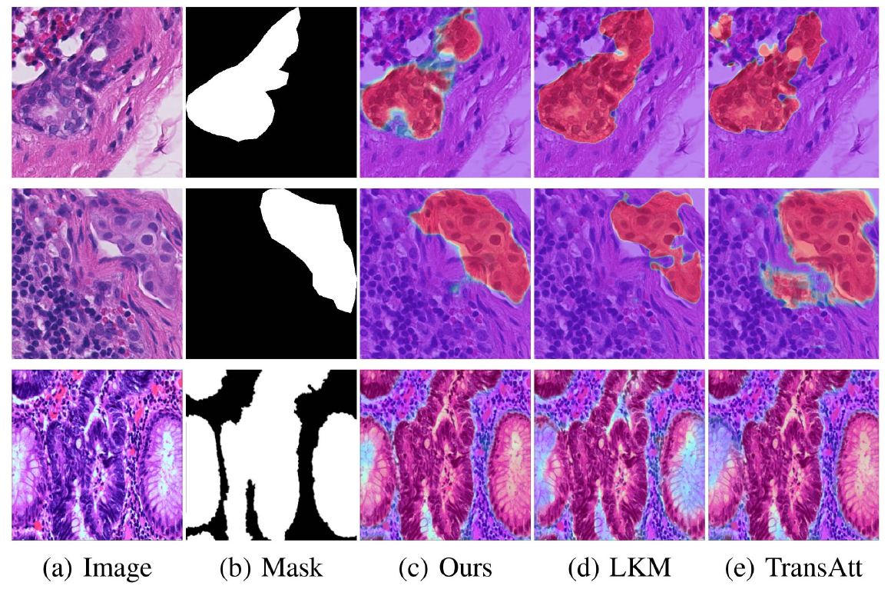
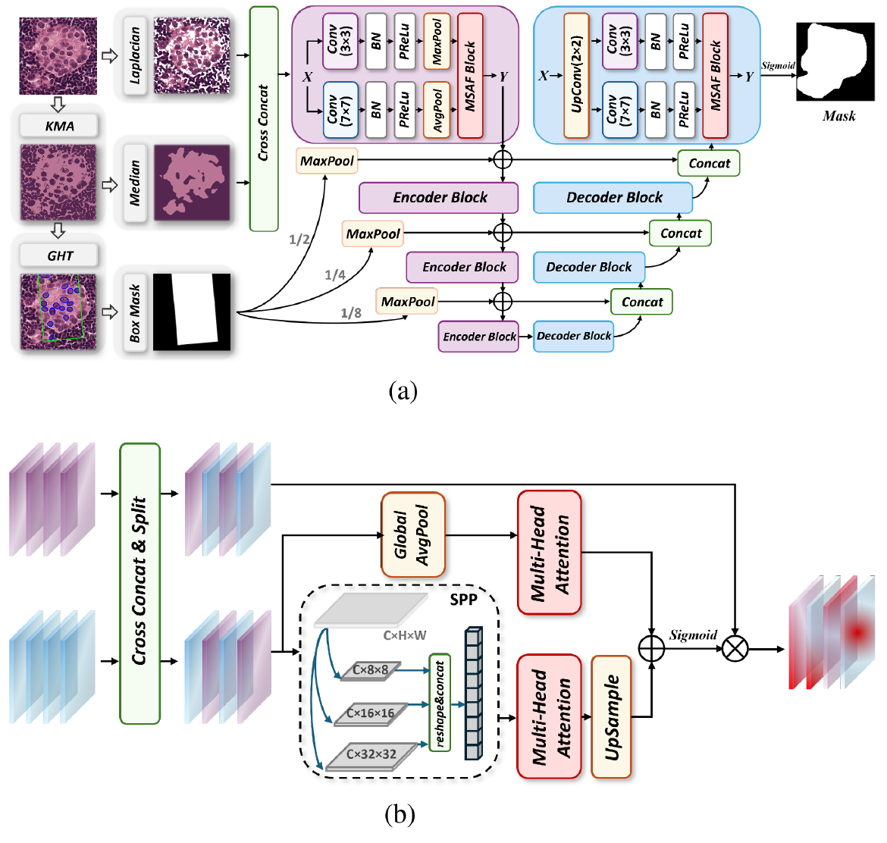
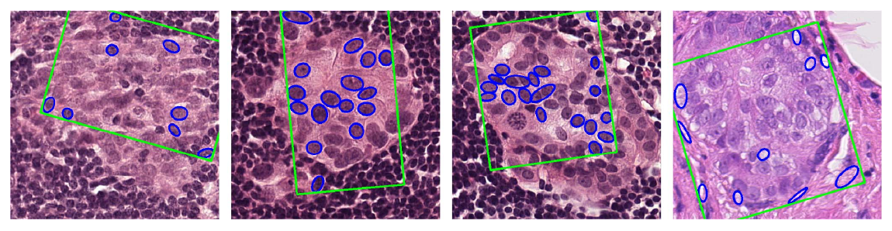
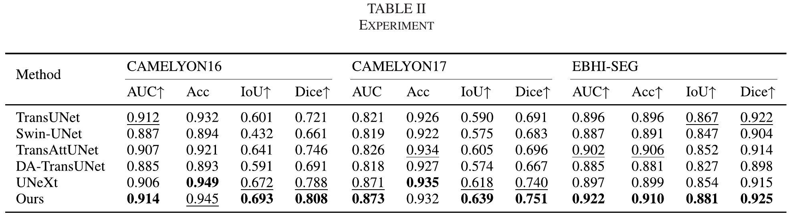
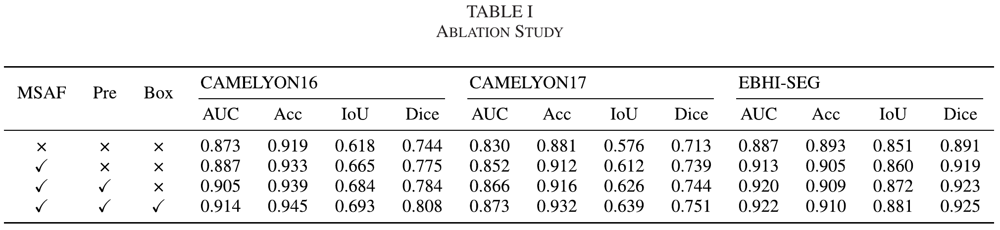

Enhance texture & color
Laplacian edge detection and Otsu thresholding highlight texture. K-means clustering and median filtering emphasize color structure.
A segmentation framework that brings texture, color and spatial cues together for whole-slide pathology images.

The paper combines image enhancement, parallel receptive fields and attention-based feature fusion.

Laplacian edge detection and Otsu thresholding highlight texture. K-means clustering and median filtering emphasize color structure.
Parallel 3 × 3 and 7 × 7 branches capture fine detail and wider structure. MSAF combines global attention with local multi-scale features.
The optional proposal module uses clustering and a Generalized Hough Transform to derive spatial prompts for the skip connections.

Original qualitative results and quantitative measurements from the published paper.
Rows show CAMELYON16, CAMELYON17 and EBHI-Seg, respectively. The original columns compare the image, reference mask and prediction heatmaps; red indicates a higher target-region probability.
Reported for MSAF-UNet in Table II, p. 3418. EBHI-Seg values are averaged across the six categories described in the paper.
| Dataset | AUC | Accuracy | IoU | Dice |
|---|---|---|---|---|
| CAMELYON16 | 0.914 | 0.945 | 0.693 | 0.808 |
| CAMELYON17 | 0.873 | 0.932 | 0.639 | 0.751 |
| EBHI-Seg | 0.922 | 0.910 | 0.881 | 0.925 |


Direct entry points to the model, training pipeline and pathology-image utilities.
Encoder–decoder network and skip connections in PyTorch.
UNet.pyTraining loop, loss functions and checkpoint saving.
train.pySliding-window processing and slide-level heatmaps.
pre_WSI.py · pre_patches.pyPatch generation notebook, data loading and evaluation utilities.
utils/IEEE Signal Processing Letters · Volume 32 · 2025
@article{Ye2025MSAFUNet,
author = {Ye, Liqi and Zhang, Junyou and Wang, Jing and Xi, Qi and Yao, Yandan},
title = {{MSAF-UNet}: A Robust Segmentation Method Integrating Traditional Image Processing and Multi-Scale Attention Fusion},
journal = {IEEE Signal Processing Letters},
year = {2025},
volume = {32},
pages = {3415--3419},
doi = {10.1109/LSP.2025.3585818}
}